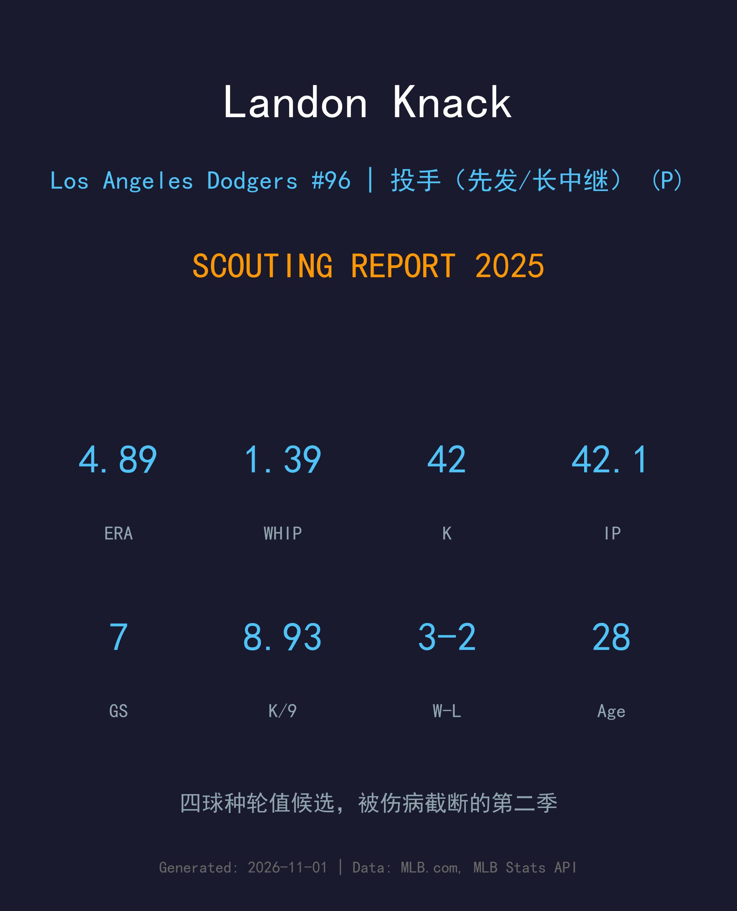
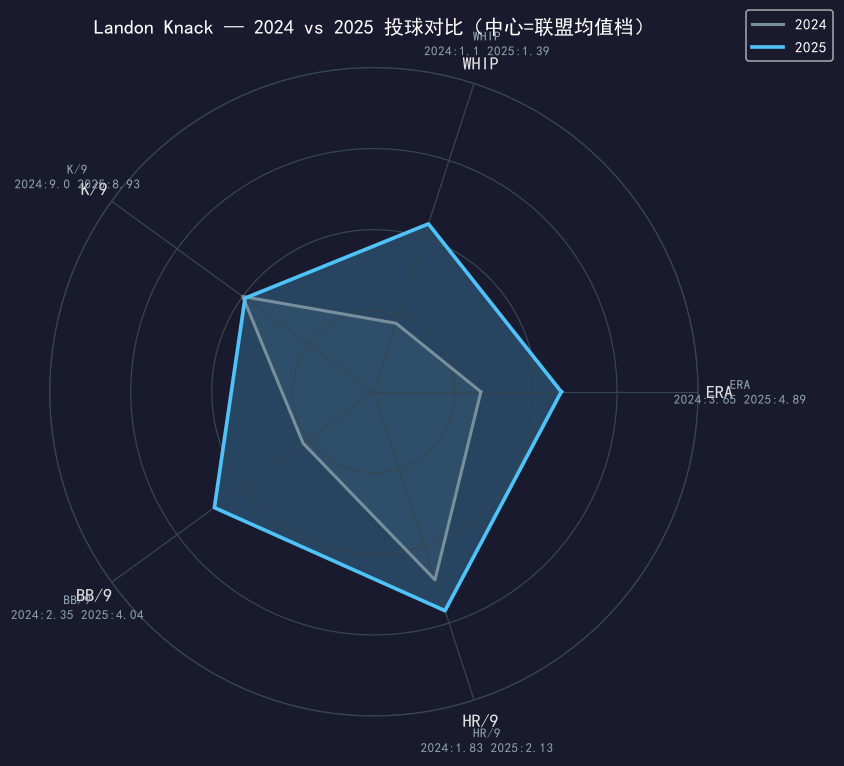
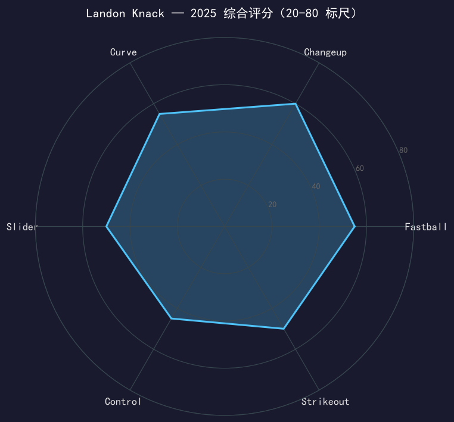

Los Angeles Dodgers #96 | 投手（先发/长中继）| 右投 | 四球种轮值候选，被伤病截断的第二季

Landon Knack 的 2025 年原本承载着道奇轮值的重要期待——赛季初他牢牢占据着先发位置，10 场出赛 7 场先发。但伤病在年中截断了一切：42.1 局之后赛季报销，季末伤病名单一直挂到 11 月 2 日才激活。
小样本里的数字并不好看：4.89 自责分率、1.39 WHIP、HR/9 2.13。但剥开 ERA 的外壳，他的三振能力（K/9 8.93）与新人年持平，四球种武器库依然完整。真正的恶化发生在控球（BB/9 2.35→4.04）和长打控制上——这两样都可能是带伤投球的副产品。
从 2025 年 11 月的视角看，Knack 的故事未完待续：28 岁、道奇自家培养的轮值候选、四球种齐备。2026 年春天，他需要把健康与控球一起找回来。
4 月 17 日完成大联盟首秀，新人年 15 场（12 先发）、3.65 自责分率、1.10 WHIP、K/BB 3.83——用一季的稳定把自己送进了道奇 2025 年的轮值计划。
赛季前段牢牢占据轮值一席，7 次先发 3 胜 2 负——在道奇这样的球队，28 岁前锁定开季轮值本身就是一张信任状。

| 赛季 | G | GS | W-L | ERA | WHIP | IP | SO | BB | K/9 | HR/9 |
|---|---|---|---|---|---|---|---|---|---|---|
| 2024（新人年） | 15 | 12 | 3-5 | 3.65 | 1.10 | 69.0 | 69 | 18 | 9.00 | 1.83 |
| 2025（伤停截断） | 10 | 7 | 3-2 | 4.89 | 1.39 | 42.1 | 42 | 19 | 8.93 | 2.13 |
两年合计 29 场、19 次先发、123 局——样本仍然单薄，任何单季结论都要打上问号。2025 年的恶化集中在两处：保送率几乎翻倍（2.35→4.04），以及被全垒打（10 支）。考虑到他年中带伤作战直至最终停赛，这两项数据的「真实含金量」需要打折看待。K/9 持平说明他的 stuff 没有退化——这大概是不幸中最重要的好消息。
2025 赛季真实配球数据（MLB Stats API pitchArsenal）：
配球主体，均速在新人年基础上略有提升。速球质量是他能立足轮值的根基。
大学时期成名的招牌武器，近 9 mph 速差对付左打者效果出色，是他三振体系的第一副手。
纵向落差的曲球，与变速球构成「一纵一坠」的变化球组合，两好球后的追杀死角。
对右打者的横向武器，完成度仍在打磨中，是四球种里相对薄弱的一环。
42.1 局的 2025 年，任何 ERA 类指标都经不起推敲。更合理的读法是看「 stuff 是否退化」——答案是否定的：K/9 8.93 与新人年 9.00 持平，四球种齐备，速球均速还有提升。他需要的不是改造，而是健康。
BB/9 2.35→4.04 的跳升在先发投手身上通常是「身体无法重复动作」的信号——这在后来证明为伤病伏笔。而 HR/9 2.13 的另一面是：当投手身体状态不佳时，速球进垒点会不自觉偏高，被打者抓到就是长打。两项数据共同指向同一个结论：他的 2025 是在「带伤硬撑」中走完的。
新人年 15 场 12 先发，2025 年 10 场 7 先发——道奇对他的定位仍是「轮值候选」。但轮值伤兵满营的现实与他自己反复的伤病史，也可能把他推向「超级长中继」的瑞士军刀路线。2026 年春训的表现将决定他走哪条路。

轮值候选，健康是唯一的前提
B- 级 / 轮值候选（健康变量）
道奇 2025 季后赛夺冠之路：外卡 2-0 红人 → NLDS 3-1 费城人 → NLCS 4-0 酿酒人 → 世界大赛 4-3 多伦多蓝鸟。
Knack 因季末伤病未能进入季后赛名单，全程缺席了球队的夺冠之旅，直到 11 月 2 日才随阵容激活回归。
Landon Knack 的 2026 年悬念十足：健康回归的他是道奇轮值第五人的合理候选，也是长中继缺口的天然答案。道奇轮值每年都会洗牌，而四球种齐备、K/9 稳定、自家培养的标签，意味着球队会给足他机会——前提是身体不再拖后腿。
理想剧本：健康完整赛季，150+ 局、ERA 回到 3.5 区间
现实基准：轮值第五人 + 长中继摇摆人，100-120 局
上行惊喜：控球找回新人年水准后，摸到晚轮值中段的门槛
Landon Knack 来自田纳西州约翰逊城，大学时期是田纳西理工的王牌投手，以速球变速球的组合闻名。2020 年选秀进入道奇体系后，他的 ascent 一度因小联盟停摆而放缓，但 2024 年 4 月 17 日的大联盟首秀立刻证明了等待的价值——新人年 3.65 自责分率，他把「轮值候选」四个字牢牢写进了自己的名字后面。
2025 年的故事本该是「接班」——他开季就在轮值里，前七场先发拿下了 3 胜。但伤病是投手世界最不讲理的作者，年中的一次伤停最终吞掉了他的整个赛季下半章。
2025 年 11 月的 Knack 站在一个干净的起点上：123 局的大联盟样本、四球种武器库、以及一支刚刚夺冠、轮值即将重组的球队。2026 年的春天，属于他的回合会重新到来。